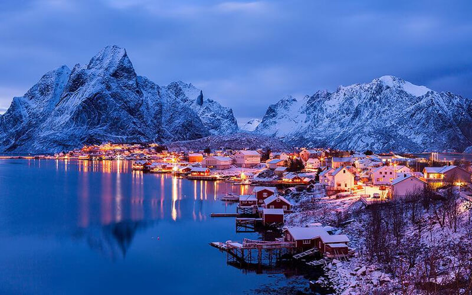
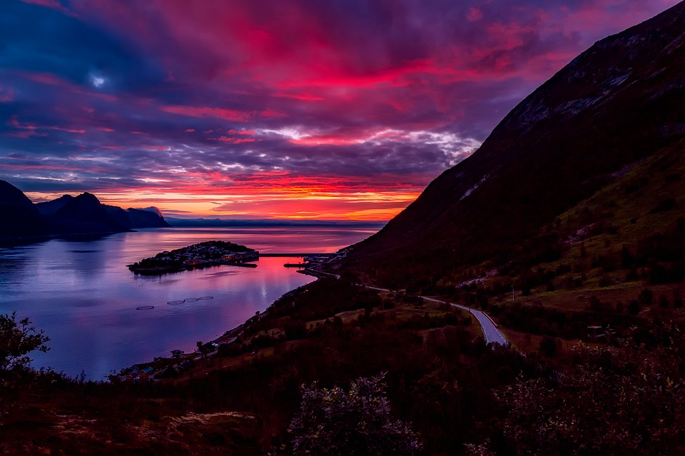
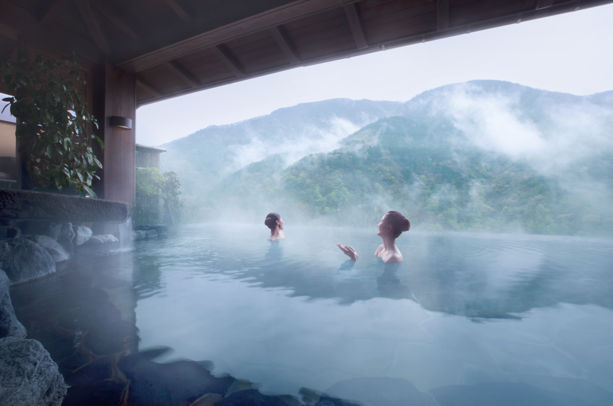
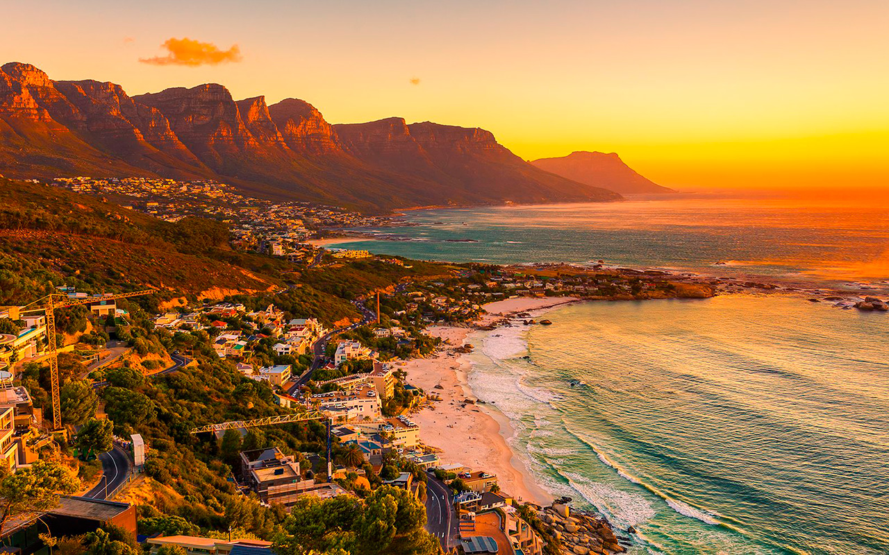

Доброго времени суток дорогие читатели. Этот сложный год наконец-то подходит к концу и я решил уже в декабре выпустить долгожданный вами топ 3 страны для путешествия в 2022 году.
Норвегия
В Норвегии я был в прошлом году. Хочу сказать, что меня очень впечатлила это страна.Вот несколько причин в нее съездить.
1. Норвегия – вторая страна в мире
Благодаря своей сильной экономике, прекрасной природе и высокому качеству жизни, Норвегия была выбрана второй страной в мире по уровню экономической и социальной жизни. Она остается таковой с 2014 года по сегодняшний день. Праздник - это чувство радости и расслабления. Так почему бы не посетить самый удобный уголок на земном шаре, где можно почувствовать себя по истине счастливым?
2. Норвегия – страна с необычным ландшафтом, природой и традициями
Норвегия - это рай, как для зимних, так и для летних развлечений на свежем воздухе! Местные горы, холмы и тропы приглашают вас на однодневные экскурсии или несколькодневные походы с красивой природой. Если вам не нравится ходить, здесь всегда можно опробовать езду на велосипеде, взяв его напрокат. Езда на горных трассах необычная в Норвегии, весь путь пролегает через неописуемо красивые ландшафты. А благодаря ряду рек, озер и сотен миль береговой линии, любому путешественнику также доступна возможность покататься на плотах или сияках..jpg)
3. Фьорды Норвегии
Норвегия - земля фьордов. Нигде в Европе вы не найдете такой привлекательный ландшафт, как на его юго-западном побережье! Гейрангер-фьорд, который находится всего в нескольких сотнях метров доступности, и Ромсдаль-фьорд с его крутыми скалистыми стенами и водопадами, несомненно, являются самыми известными не только в Норвегии, но и во всем мире. Помимо этого сказочная страна обрамлена берегами побережья с волшебной атмосферой..jpg)
4. Земля тысячи озер
Немногоизвестный факт об Норвегии заключается в том, что в знаменитой «Земле Тысячи озер» больше озер чем в Финляндии. . Наиболее популярным среди туристов является озеро Гьенде в национальном парке Ютунхеймен. Часто вдоль него проводят походы, и не зря, так как природная красота этого места неописуема..jpg)
5. Горнолыжные курорты Норвегии
В Норвегии есть несколько районов, где снег не сходит круглый год, и всегда можно воспользоваться услугами горнолыжных курортов. Самый известный - Летний лыжный центр Стрюн, который открыт для лыжников до конца лета. Весь район вокруг Стрюна известен своим богатым снежным покровом круглый год. Здесь можно прокатиться даже на велосипеде до привлекательной долины, соединяющей Гейрангер-фьорд и Стрюн. Это лучшее место, где можно насладиться пейзажами в Арктике и прохладой даже в самое жаркое лето. Гейрангер находится в двух шагах от знаменитого вида горы Далснибба, известной несколькими метрами снежных стен, выстроенных вдоль извилистой горной дороги..jpg)
6. Летние ночи в Норвегии
Летом в большинстве районов Норвегии нет закатов, таких, как мы привыкли видеть у нас. Солнце здесь, кажется, лишь немного достает до горизонта, а через несколько минут снова возвращается. Длительные ночи - отличная возможность для фотографов, ночных экскурсий в деревню или долгих посиделок с друзьями у костра.
7. Норвегия – страна настоящих викингов
Викинги были известны своей яростью в бою, а также своими деловыми навыками. Раньше они блуждали со своими длинными лодками через скандинавский пейзаж и оставляли много памятников и напоминаний о своей культуре. Следуя по их стопам, можно набрести на Музей культуры викингов на полуострове Бюгдё или посетите одну из многочисленных экзотических деревянных церквей, созданных в своем время людьми, вдохновленными культурой викингов..jpg)
8. «Allemannstrett» в Норвегии
Allemannsrett - закон о свободном движении в природе, является основной причиной для того, чтобы отправиться в Норвегию тем, кто любит жить на природе, разбивать палаточный городок. Закон позволяет любому поставить палатку почти в любом месте дикой природы или на территории, которая не возделывается людьми, а также собирать дикие ягоды и некоторые растения (кстати, забыли упомянуть, что Скандинавия - это рай для тех, кто любит собирать грибы). Благодаря этому закону, Вы можете отправиться в дикую местность для того, чтобы просто провести ночь в том месте, которое Вам понравится, не опасаясь посещений природоохранников или землевладельцев..jpg)
9. Осло – жемчужина Норвегии
Если Вы насытились природой, то обязательно посетите столицу Норвегии - Осло. Привлекательная современная архитектура манит и восхищает путешественников своими красочными скандинавскими домами. Здесь можно посетить всемирно известные музеи, посвященные викингам, полярным исследователям или даже известным художникам. Приятно провести время можно будет также в одном из многочисленных стильных кафе в центре города. В Осло туристы чувствуют себя наиболее комфортно по сравнению с другими европейскими столицами. Это самый зеленый мегаполис в Европе..jpg)
10. Aquavit – напиток настоящих викингов
Как и в любой стране, Норвегия славиться своими традиционными напитками или блюдами. Aquavit – это очень сильный картофельный бренди с травами. Каждый посетитель Норвегии должен попробовать его хотя бы один раз! Если словам плохо верится, езжайте скорее в Норвегию, и убедитесь сами в том, насколько это сказочная страна, не пожалее.jpg)
Япония
Современная и традиционная, сумасшедшая и сдержанная, полная мистических храмов и крупных торговых центров, театров кабуки и лазерных шоу, зеленых лесов и мегаполисов, одетая в кимоно и короткие юбки, приправленная зеленым чаем и суши, переполненная и успокаивающая. Посмотрите сами, на что похожа Япония. Откройте для себя 10 причин, почему вы должны отправиться в страну воинственных самураев и новейших технологий:
1. Вы увидите кроваво-красные клены
Если вы запланируете поездку осенью, то увидите, как Япония сверкает сотнями цветов! Желтый, оранжевый, красный, коричневый и десятки оттенков этих цветов. С сентября по начало декабря японцы празднуют Момиджигари - любуясь красными листьями кленов - Момиджи..jpg)
2. Вы почувствуете настоящий запах весны
С марта японские офисные здания быстро пустеют, и толпа направляется в парки. Ведущий цвет становится розовым, а запах цветов витает в воздухе. Радостные японцы пьют сакэ на открытом воздухе. Это означает, что праздник Ханами наступил, и в Стране сакуры ... цветут вишневые деревья. Тысячи вишневых деревьев !!!.jpg)
3. Вы посетите японские замки
Первые замки были построены в VII-VIII веке, но большинство укреплений относятся к XIV-XV векам. Замок Химэдзи является национальным достоянием Японии в списке ЮНЕСКО. Из-за изящного внешнего вида и белых стен он получил романтическое прозвище Замок Белой Цапли..jpg)
4. Отдых в горячих источниках
В Японии, сформированной вулканами, вы найдете много горячих источников (онсэнов). После посещения кипящего горячего онсэна - одно можно сказать наверняка - здоровый, глубокий сон вам обеспечен. Некоторые японцы считают, что онсэн - это единственный истинно японский аспект их культуры, который родился не в континентальной Азии.
5. Вы не только попробуете суши
Япония - идеальное место для гурманов. Характерной особенностью Страны Цветущей Сакуры, конечно же, являются суши, но каждый остров или регион может похвастаться местными фирменными блюдами (мейбуцу). Здесь ингредиенты и способ применения разнятся. Обжариваются с горькой дыней, клецками из осьминога, японской говядиной, раменом, вкусными окономияками или пряными пирогами, морепродуктами, саке, вкусной темпурой. Здесь вы будете не просто есть и наслаждаться, но погрузитесь в праздник вкуса.jpg)
6. Зарядитесь позитивом в Токио !
Токио постоянно меняется и удивляет. Любители искусства, хорошей еды, последних тенденций, архитектуры, театра, садов, электроники и любителей аркад. Этот мегаполис очарует всех!.jpg)
7. Вы узнаете о японском образе жизни
Пребывание в ryokan или традиционной гостинице является уникальным опытом. Ночь на футоне (матрас на татами), ванна в о-фуро (японская ванна), жареная рыба или рис на завтрак, юката, похожая на кимоно, традиционные гетто-сандалии - это всего лишь несколько способов узнать о японской культуре и образе жизни..jpg)
8. Вы посетите район гейши в Киото
Киото был имперской столицей Японии более тысячи лет. Здесь более тысячи буддийских храмов. Века религиозной архитектуры и сырых дзен-садов. Религиозность и гейши развлекают гостей в чайных комнатах. Добро пожаловать в Киото!.jpg)
9. Вы будете путешествовать по мистическим тропам
Представьте себе путешествие по заколдованному лесу. Лес покрыт зеленым мхом с высокими кедрами, большими папоротниками, пересекаемыми ручьями и водопадами. Это Кумано Кодо. На протяжении более тысячи лет паломники шли по пути, соединяющему храмы буддизма..jpg)
10. Вы откроете для себя современное искусство в Японии
Наосима, остров во Внутреннем море, напоминает огромный музей под открытым небом, в котором размещаются здания и инсталляции ведущих зарубежных художников, которые хотят продемонстрировать свою природную красоту. Фото с желтой скульптурой "Тыква" Кусамы Яёи обязательно !!!.jpg)
Южно-Африканская Республика
Я считаю себя достаточно искушенным путешественником. За моими плечами страны Северной, Центральной и Южной Америки, Азии и большей части Европы. В Южную Африку я ехать не стремился, а когда взял билеты в Кейптаун, то летел без сильных ожиданий. Но ЮАР ошеломила, впечатлила, влюбила с первого взгляда и с первого вздоха. Здесь все по максимуму – свет, цвет, звуки, настроение, эмоции. Яркие краски слепят глаза. Музыка заставляет броситься в пляс. От природной красоты замирает сердце. Люди очаровывают. Животные умиляют. Сейчас постараюсь обуздать свои эмоции и сформулировать основные причины, по которым стоит посетить ЮАР.1.Пляжи
ЮАР можно назвать страной пляжей. Они здесь невероятные - с широкой береговой линией, с красивыми видами.jpg)
2. Богатый животный мир
Когда я увидел дикого страуса, бегущего вдоль дороги, я понял, что "пропал". Южная Африка - одно из лучших в мире мест для наблюдения за животными в дикой природе. В национальных парках вы за один день можете увидеть всех животных из большой пятерки.jpg)
3. Пингвины
Пингвины, конечно, тоже животные и их можно было бы отнести к предыдущему пункту. Но это же пингвины!!!🥰 Недалеко от Кейптауана, в Boulders Beach, живет огромная колония пингвинов. С ними можно поплавать в океане, а можно просто рядом погреться на солнце.jpg)
4. Еда
ЮАР - гастрономический рай и для любителей морских деликатесов, и для мясных гурманов. Креветки, устрицы, мидии, кальмары, лангусты, мясо антилопы, страуса и тд - всего этого в избытке и по очень доступным ценам.jpg)
5. Вино
Южная Африка славится своим вином, которое, на мой взгляд, является лучшим в мире (Франция, Италия, Чили, простите😂). Здесь множество прекрасных виноделен, где можно посидеть с видом на виноградники за дегустацией вина.jpg)
6. Дорога садов
В ЮАР у вас есть возможность прокатиться по одной из самых красивых дорог мира. "Дорога садов" начинается в окрестностях Кейптауна и заканчивается на западе в городе Порт Элизабет. По пути вы можете насладиться невероятными по красоте природными видами.jpg)
7. Кейптаун
Кейптаун настолько хорош и красив, что достоин того, чтобы его вынести в отдельный пункт. Честно, я бы вернулся в ЮАР, хотя бы только ради Кейптауна.jpg)
8. Бюджетный отдых
Самое дорогое в путешествии в ЮАР - это авиабилеты. Цены же внутри страны совершенно доступны. Даже с ограниченным бюджетом здесь можно останавливаться в бутик-отелях и позволять себе питаться морепродуктами.jpg)
9. Закаты
Я настолько люблю красивые закаты, что решил выделить их в качестве отдельной причины, чтобы посетить ЮАР. Вы только посмотрите, какая красота разыгрывается на небе каждый день.jpg)
10. Погода
В ЮАР редко бывает слишком жарко, редко бывает слишком холодно, и большую часть времени светит солнце. Разве это не чудесно? Я могу продолжать перечислять причины, по которым стоит приехать в эту африканскую страну еще очень долго. Но остановлюсь на 10-ти. Думаю, этого уже достаточно, чтобы захотелось поехать в ЮАР
На этом сегодня хотелось бы закончить. Надеюсь будущий 2022 год пройдет успешней для нас всех. Всем хороших зимних выходных!